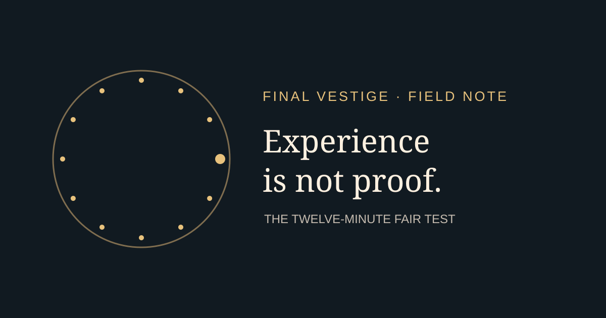

Optional 42-second evidence film — review concept
Original poster, complete transcript and WebVTT captions are supplied. The video has not been embedded, encoded or proven playable in this candidate; nothing autoplays. The full guide remains available as text below.

Read the complete 42-second narration transcript
0–7s: Twelve minutes can feel long when your mind refuses to settle.
7–14s: A quiet recording might make it easier to keep an appointment with yourself.
14–21s: But a pleasant session is not proof of a special brainwave effect.
21–28s: Researchers compare alternatives, measure outcomes, and keep failures visible.
28–35s: Before paying, check the package, the evidence, and who receives your email.
35–42s: Try the free twelve-minute exercise first. Then decide what a recording is worth.
Caption timing source (WebVTT); no playback or caption-sync certification has been performed.
Tools Under Review · Evidence before offer
Before you buy the twelve-minute promise.
A quiet audio session can feel valuable. That is not proof that one branded recording recreates the benefits of an hour's advanced meditation. Learn what is actually offered, try a useful exercise, then choose without a manufactured guarantee.
What Puységur's old records teach us
Puységur preserved witnesses, predictions, contradictory experiences and operator doubts. The records show what people reported; they do not establish a magnetic force. The distinction still matters when a seller attaches brainwave language to a personal experience. Read the original historical source archive.
In a 2007 experiment, approximately three months of intensive meditation training was associated with changes in an attentional-blink task. That was not a test of Zen12. A 2023 review of binaural-beat EEG studies reported mixed and contradictory results. Neither study demonstrates that Zen12 produces the advertised hour-equivalence or clinical outcomes.
Try twelve minutes without buying anything.
Choose one safe, small task. Define a finish line. Silence nonessential notifications and work for twelve minutes. Note moments when attention wanders, and simply return. Afterwards record what you finished and what interrupted you. Repeat another day if useful. These notes describe your experience; they do not prove a physiological mechanism, make a diagnosis, or show efficacy for commercial audio.
The optional free Seven Day Focus Fieldbook is the existing 52-page resource delivered through Final Vestige's single Dispatch/Jetpack program. No second list or signup is required to read this guide.
Compare the actual packages, not the slogans.
| Exact offer | Seller-described format | Evidence boundary |
|---|---|---|
| Zen12 Beginner | First six levels, 24 MP3 recordings | Not the twelve-level course |
| Zen12 Premium | All twelve levels, 48 MP3 recordings | Hour-equivalence and health benefits have not been independently proven for this named program |
| Zen12 Advanced | Final six levels, 24 MP3 recordings | Not the starting six levels |
| Hypnosis Live Total Focus | One 33-minute, 47-MB hypnosis recording | Promised concentration effects are seller claims |
| Brainwave Shots Focus Shot | 15- and 30-minute files plus brainwave-only versions | Hours of increased focus are seller claims |
Formats reviewed against official Inspire3 and individual seller pages on November 13, 2026. Prices and refund conditions change; no checkout price or outcome is guaranteed here.
Three questions before paying
Is it really the entire package? Beginner and Advanced do not individually contain all twelve Zen12 levels. Check exactly which format, bonus, user rights and support the final purchase includes.
Does free audio mean another email list? The Zen12 gift page says it also enrolls the visitor in Zen12's own newsletter. That is not Final Vestige Dispatch. No personal data is shared between them by this page.
Does a refund promise prove results? No. The seller describes one-year terms for Zen12 and Focus Shot and fourteen days for Total Focus; actual checkout, exceptions and claim handling remain unaudited. Verify the operative merchant terms.
Optional commercial path · Not activated
Considering Zen12 Premium?
Its concrete offering is a structured twelve-level, 48-MP3 library. You might value audio variety and a convenient twelve-minute routine. That is a preference-based purchasing reason, not a promise of neurological, medical or productivity results.
If a future approved purchase link is used, Final Vestige may earn a commission. No affiliate earning link has been activated here.
Withheld until Final Vestige publisher eligibility, exact approved tracking terms, permitted channels, actual merchant checkout, disclosure review and founder release approval have been verified. This is a native disabled control, not a hidden working link.
Source trail and independent judgment
Slagter et al. 2007 · 2023 review of EEG/binaural-beat studies · FTC disclosure FAQ · FTC claims guidance · Full 2,424-word independent research guide.
These sources do not establish Zen12 clinical or cognitive efficacy. No product was personally used or tested by Final Vestige for this review.